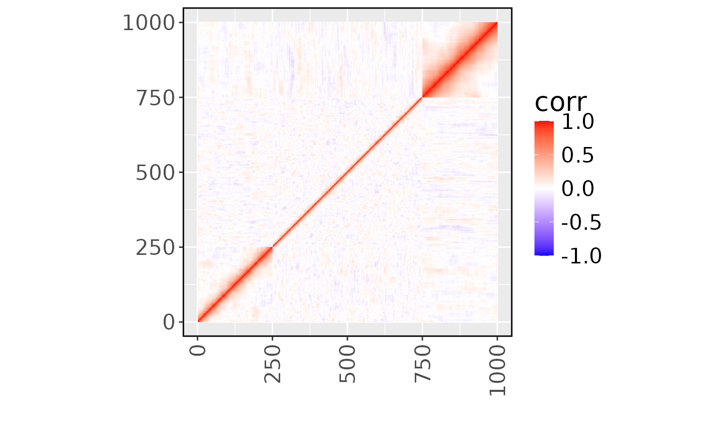

Introduction_to_CASE.RmdFirst, we load necessary packages.
data("example_data")
attach(example_data)
N = nrow(X)
M = ncol(X)
C = ncol(Y)
cat(" Sample size =", N, "\n",
"SNP size =", M, "\n",
"Cell type number =", C, "\n")
#> Sample size = 500
#> SNP size = 1000
#> Cell type number = 3Let’s have a look at the Linkage Disequilibrium (LD) of the example genotype.
R = cor(X)
df <- expand.grid(seq(M), seq(M))
df$corr <- as.vector(R)
g2 = ggplot(df, aes(x = Var1, y = Var2, fill = corr)) +
geom_tile() +
scale_fill_gradient2(low = "blue", mid = "white", high = "red", limits = c(-1, 1),
midpoint = 0, na.value = NA,
guide = guide_colorbar(
barwidth = 1, barheight = 7, title.position = "top", oob = scales::oob_squish
)
) +
xlab("") +
ylab("") +
theme(aspect.ratio = 1, axis.text.x = element_text(angle = 90, hjust = 1, vjust = 0.5),
strip.background = element_rect(fill = "white", color = "white"),
panel.border = element_rect(colour = "black", fill = NA,
linewidth = 1),
strip.text = element_text(color = "black", size = 20),
text = element_text(size = 20)) +
labs(fill = "corr")
print(g2)
Only SNP 10 and SNP 950 have eQTL effects for all three cell types and for the first two cell types, respectively.
print(which(B != 0, arr.ind = TRUE))
#> row col
#> [1,] 10 1
#> [2,] 950 1
#> [3,] 10 2
#> [4,] 950 2
#> [5,] 10 3
idx1 = 10
idx2 = 950
B[c(idx1, idx2), ]
#> [,1] [,2] [,3]
#> [1,] 0.5477226 0.4472136 0.3162278
#> [2,] 0.5000000 0.3872983 0.0000000Check the Z scores for the causal SNPs.
Z = matrix(0, M, C)
for (i in 1:M){
m1 = summary(lm(Y ~ X[, i]))
Z[i, ] = sapply(m1, function(x) x$coefficients[2, 3])
}
Z[c(idx1, idx2), ]
#> [,1] [,2] [,3]
#> [1,] 5.162539 5.451293 3.7760017
#> [2,] 4.292018 3.878442 -0.1058495Visualization of the Z scores for three cell types. The true eQTLs were surrounded with green circles. The dashed grey and red lines are for nominal significance () and significance after Bonferroni adjustment ().
df <- as.data.frame(Z)
colnames(df) = paste0("Cell_type_", 1:3)
df$SNP <- 1:nrow(df)
df_long <- pivot_longer(df,
cols = starts_with("Cell_type"),
names_to = "Variable",
values_to = "Z")
df_long$Highlight <- with(df_long,
(SNP == 10) |
(SNP == 950 & Variable != "Cell_type_3")
)
ggplot(df_long, aes(x = SNP, y = Z)) +
geom_point() +
geom_point(data = subset(df_long, Highlight),
aes(x = SNP, y = Z),
color = "green", size = 4, shape = 1) +
geom_hline(yintercept = c(1.96, -1.96), linetype = "dashed", color = "grey") +
geom_hline(yintercept = c(4.055, -4.055), linetype = "dashed", color = "red") +
facet_wrap(~ Variable) +
theme_minimal()First, we try CASE fine-mapping for each cell type separately. The results lack power for the third cell type and for SNP 950.
for (c in 1:C){
f1 = CASE(Z = Z[, c], R = R, N = N)
print(f1$sets)
}
#> Start Prior fitting.
#> Initialize with patterns: 1 0
#> Start Posterior Analysis.
#> Start getting credible sets.
#> [[1]]
#> [[1]]$cs
#> [[1]]$cs[[1]]
#> [1] 6 12 4 11 9 8 10 7
#>
#>
#> [[1]]$purity_min_cor
#> [1] 0.6377559
#>
#> [[1]]$coverage
#> [1] 0.9815271
#>
#>
#> Start Prior fitting.
#> Initialize with patterns: 1 0
#> Start Posterior Analysis.
#> Start getting credible sets.
#> [[1]]
#> [[1]]$cs
#> [[1]]$cs[[1]]
#> [1] 7 8 13 9 12 11 10
#>
#>
#> [[1]]$purity_min_cor
#> [1] 0.7179673
#>
#> [[1]]$coverage
#> [1] 0.9821429
#>
#>
#> Start Prior fitting.
#> Initialize with patterns: 1 0
#> Start Posterior Analysis.
#> Start getting credible sets.
#> [[1]]
#> [[1]]$cs
#> list()
#>
#> [[1]]$purity_min_cor
#> numeric(0)
#>
#> [[1]]$coverage
#> numeric(0)However, CASE jointly studies three cell types together to improve the power of identifying the causal variants.
fit <- CASE(Z = Z, R = R, N = N)
#> Start Prior fitting.
#> Initialize with patterns: 100 110 111 010 001 000
#> Start Posterior Analysis.
#> Start getting credible sets.
print(fit$sets)
#> [[1]]
#> [[1]]$cs
#> [[1]]$cs[[1]]
#> [1] 8 9 11 10
#>
#> [[1]]$cs[[2]]
#> [1] 941 944 945 946 952 948 951 949 947 950
#>
#>
#> [[1]]$purity_min_cor
#> [1] 0.9039752 0.8340624
#>
#> [[1]]$coverage
#> [1] 1.0000000 0.9938424
#>
#>
#> [[2]]
#> [[2]]$cs
#> [[2]]$cs[[1]]
#> [1] 8 9 11 10
#>
#> [[2]]$cs[[2]]
#> [1] 941 944 945 946 952 948 951 949 947 950
#>
#>
#> [[2]]$purity_min_cor
#> [1] 0.9039752 0.8340624
#>
#> [[2]]$coverage
#> [1] 1.0000000 0.9938424
#>
#>
#> [[3]]
#> [[3]]$cs
#> [[3]]$cs[[1]]
#> [1] 8 9 11 10
#>
#>
#> [[3]]$purity_min_cor
#> [1] 0.9039752
#>
#> [[3]]$coverage
#> [1] 0.9975369
sessionInfo()
#> R version 4.4.2 (2024-10-31)
#> Platform: x86_64-pc-linux-gnu
#> Running under: Ubuntu 22.04.5 LTS
#>
#> Matrix products: default
#> BLAS: /usr/lib/x86_64-linux-gnu/openblas-pthread/libblas.so.3
#> LAPACK: /usr/lib/x86_64-linux-gnu/openblas-pthread/libopenblasp-r0.3.20.so; LAPACK version 3.10.0
#>
#> locale:
#> [1] LC_CTYPE=C.UTF-8 LC_NUMERIC=C LC_TIME=C.UTF-8
#> [4] LC_COLLATE=C.UTF-8 LC_MONETARY=C.UTF-8 LC_MESSAGES=C.UTF-8
#> [7] LC_PAPER=C.UTF-8 LC_NAME=C LC_ADDRESS=C
#> [10] LC_TELEPHONE=C LC_MEASUREMENT=C.UTF-8 LC_IDENTIFICATION=C
#>
#> time zone: UTC
#> tzcode source: system (glibc)
#>
#> attached base packages:
#> [1] stats graphics grDevices utils datasets methods base
#>
#> other attached packages:
#> [1] tidyr_1.3.1 ggplot2_3.5.1 CASE_0.2.3
#>
#> loaded via a namespace (and not attached):
#> [1] gtable_0.3.6 jsonlite_1.8.9 dplyr_1.1.4 compiler_4.4.2
#> [5] tidyselect_1.2.1 jquerylib_0.1.4 systemfonts_1.1.0 scales_1.3.0
#> [9] textshaping_0.4.1 yaml_2.3.10 fastmap_1.2.0 R6_2.5.1
#> [13] labeling_0.4.3 generics_0.1.3 knitr_1.49 MASS_7.3-61
#> [17] tibble_3.2.1 desc_1.4.3 munsell_0.5.1 bslib_0.8.0
#> [21] pillar_1.9.0 rlang_1.1.4 utf8_1.2.4 cachem_1.1.0
#> [25] xfun_0.49 fs_1.6.5 sass_0.4.9 cli_3.6.3
#> [29] pkgdown_2.1.1 withr_3.0.2 magrittr_2.0.3 digest_0.6.37
#> [33] grid_4.4.2 mvtnorm_1.3-2 lifecycle_1.0.4 vctrs_0.6.5
#> [37] evaluate_1.0.1 glue_1.8.0 farver_2.1.2 ragg_1.3.3
#> [41] fansi_1.0.6 colorspace_2.1-1 purrr_1.0.2 rmarkdown_2.29
#> [45] tools_4.4.2 pkgconfig_2.0.3 htmltools_0.5.8.1